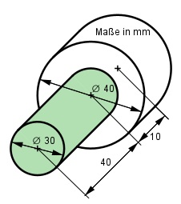
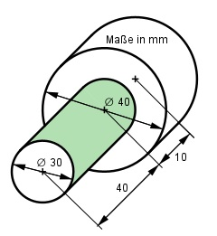

Aufgabe 41 Berechnen Sie das Volumen V und die Oberfläche O des dargestellten Körpers.

V = grüner Zylinder + weißer Zylinder dgrün = 30 mm --> rgrün = dgrün/2 = 30 mm/2 = 15 mm dweiß = 40 mm --> rweiß = dweiß/2 = 40 mm/2 = 20 mm V = п * rgrün2 * hgrün + п * rweiß2 * hweiß V = п * 152 mm2 * 40 mm + п * 202 mm2 * 10 mm V = 28 260 mm3 + 12 560 mm3 = 40 820 mm3
O = weiße Zylinderoberfläche + + grüne Zylindermantelfläche O = 2*п*rweiß2 + 2*п*rweiß*hweiß + 2*п*rgrün*hgrün O = 2*п*202 mm2 + 2*п*20 mm*10 mm + 2*п*15 mm*40 mm O = 2 512 mm2 + 1 256 mm2 + 3 768 mm2 = 7 536 mm2